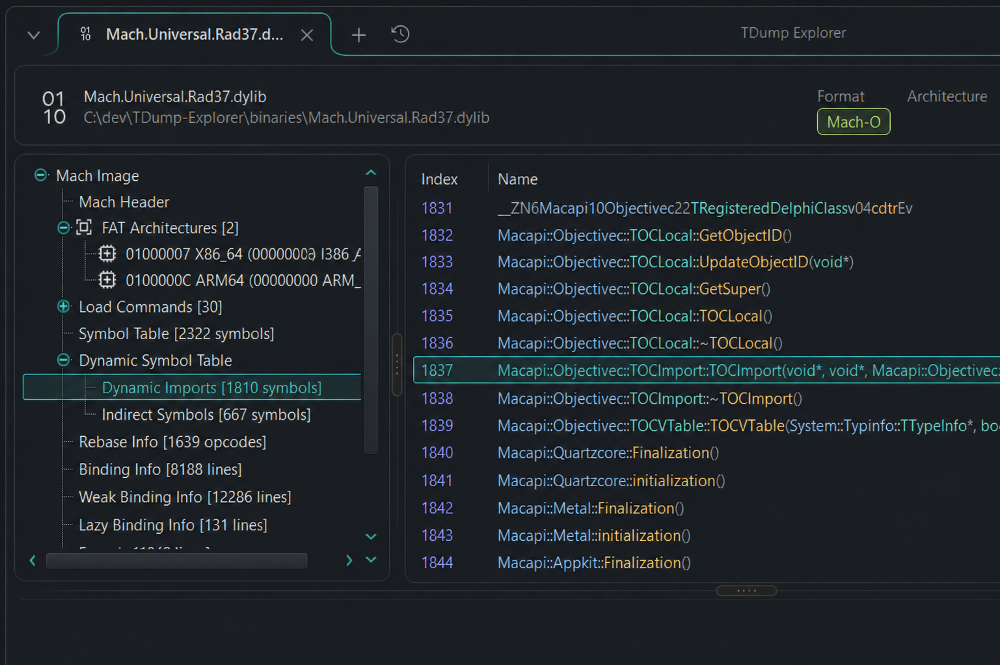
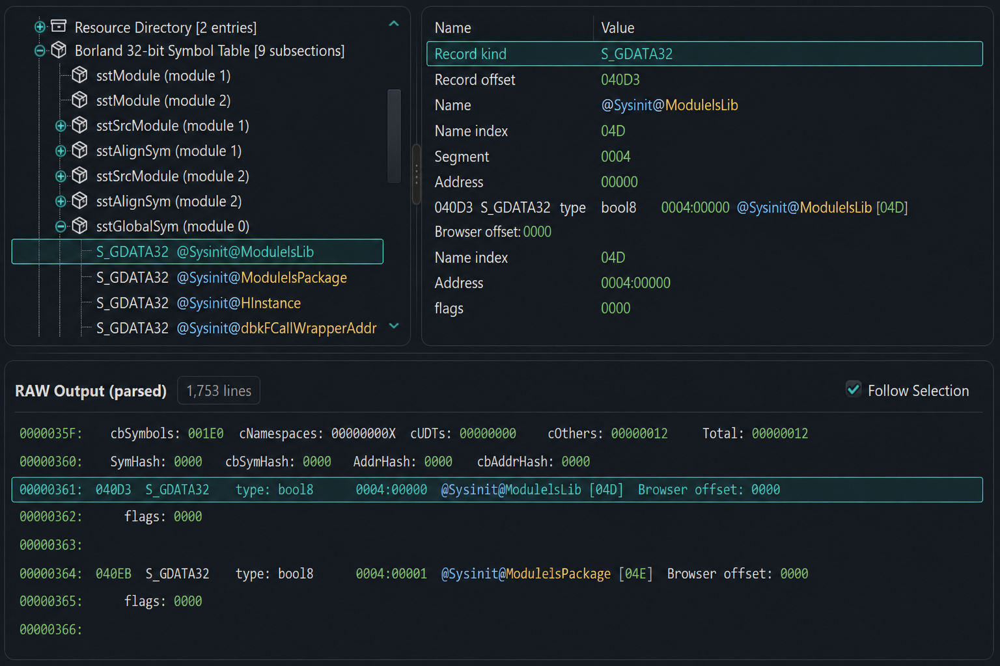
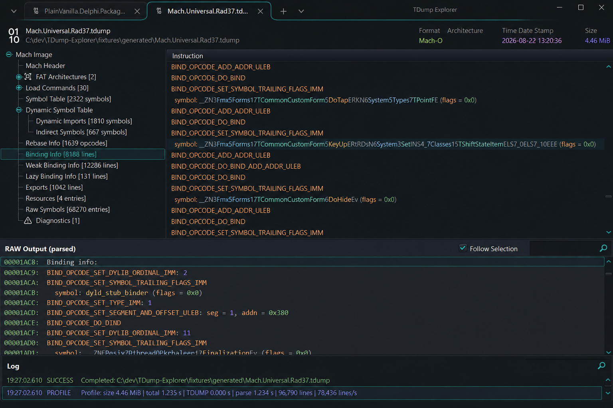

Navigate instead of search
Browse headers, sections, imports, exports, resources, relocations, symbols, source modules, and diagnostics as structured views.
TDUMP / TDUMP64 · NATIVE WINDOWS
TDump Explorer turns Embarcadero TDUMP and TDUMP64 output into structured trees and tables while keeping the original report available for verification.

OVERVIEW
TDUMP exposes a large amount of binary and debug information as text. TDump Explorer parses that output and presents it as structured, navigable views while preserving access to the original report.
Open an existing report directly, or start from a supported binary and let the application run the appropriate TDUMP utility first. Each document keeps the structured interpretation and its source text together.
The result is an inspection workflow built around source-backed data—not a debugger, disassembler, or replacement for the TDUMP toolchain.
binary file │ ▼ TDUMP / TDUMP64 │ ▼ text report │ ▼ TDump Explorer │ ├── headers ├── sections ├── imports / exports ├── symbols ├── resources └── RAW report

Browse headers, sections, imports, exports, resources, relocations, symbols, source modules, and diagnostics as structured views.

Keep the original TDUMP report available and correlate structured selections with their source text when supported.

The application is designed around mapped input, indexed lines, lazy decoding, virtualized rows, and background filtering.
CAPABILITIES
Move through complex dump data using trees and tables instead of manually scanning the source report.
Keep the original TDUMP text visible for verification and correlate structured data back to its source ranges where available.
Inspect output covering PE, ELF, Mach-O, OMF, archives, and Borland debug information.
Review imports, exports, sections, resources, loader metadata, source modules, symbols, and parser diagnostics.
Filtering, virtualized views, indexed input, and background operations are designed for large TDUMP reports.
Drag and drop, multi-document tabs, recent files, system/light/dark application themes, and per-monitor DPI awareness.
ANALYSIS COVERAGE
Coverage follows the structures emitted by the selected TDUMP or TDUMP64 version. The application keeps useful diagnostics and source-backed fallback views when a normal projection is not available.
Actual coverage depends on the report emitted by the TDUMP or TDUMP64 version being used.
HOW IT WORKS
binary file ──> TDUMP / TDUMP64 ──> temporary report ─┐ ├─> mapped text source ─> parser ─> document tab .tdump report ────────────────────────────────────────┘
You can open an existing TDUMP report directly, or open a supported binary and let TDump Explorer invoke an installed TDUMP or TDUMP64 utility to generate the report first.
TDUMP is optional for existing reports. Opening an existing .tdump or compatible text report does not require TDUMP to be installed.
INTERFACE
Real application captures show the same document model across different report families, with the original report available for correlation and filtering.
QUICK START
Open a generated .tdump report, drag it onto the application, or pass its path on the command line.
When opening a binary, TDump Explorer locates an installed tdump.exe or tdump64.exe and selects the appropriate tool.
Select nodes in the structured tree to populate their corresponding detail views.
Use the RAW panel to filter the original report and, when useful, enable selection following.
.exe · .dll · .bpl · .dpl · .ocx · .cpl · .scr · .com · .sys · .obj · .o · .lib · .ar · .a · .elf · .so · .dylib · .bundle · .mach · .dcu · .tdump · compatible text reports
Recognizing an extension does not guarantee that every installed TDUMP version can produce the same structured report.
OPEN SOURCE · MIT
Explore the source, follow development, or check available releases on GitHub.